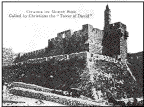

|
| A B C D E F G H I J K L M N O P Q R S T U V W X Y Z |
 The Latin dominion over Jerusalem really came to an end on 2 October, 1187, when the city opened its gates to Saladin (Yusuf ibn Ayyub, Salah-ed-din, Emir of Egypt, 1169-93); although fragments of the Latin kingdom in Palestine lasted into another century. Frederick II acquired a short possession of Jerusalem itself by treaty later, and the title "King of Jerusalem" added an empty splendour to the styles of various European sovereigns almost to our own time. Nevertheless after 1187 the episode of Christian and Latin rule over the Holy City is closed. From that time it falls back again into its former state of a city under Moslem government, in which Christian pilgrims are at best only tolerated.
As soon as Saladin's army entered the city they set and to destroy all traces of the Christian rule. They tore the great gilt cross from the Dome of the Rock, broke up the bells, plundered churches and convents, restored all the buildings that had been mosques (notably the Dome of the Rock and the El-Aqsa mosque), turned other churches into stables or granaries, founded Moslem schools, hospitals, and all the pious institutions that go by the general name of waqf. While Europe was thunderstruck at the loss of the Holy City, and was preparing a new crusade to recapture it, letters were sent to all parts of the Moslem world announcing the glad tidings that El-Quds was now purified and restored to the true believers. But — true to the promise made by Omar (see above) — Saladin left the Holy Sepulchre, as well as a few other churches, to the Christians (the Orthodox). For the use of these they had to pay a heavy tribute. The church of the Knights of St. John was turned into a hospital (at the place still called Muristan, where the German Protestant church now stands). Saladin further strengthened the walls of the city when the Third Crusade (with King Richard of England) approached and threatened it (1191). In 1219 the Sultan Malik-el-Mu'azzam (d. 1227, viceroy at Damascus for El-Mansur) ordered these walls to be destroyed, lest they should become a protection for the Franks. In 1229 another short interlude began. Emperor Frederick II (1212-50) came on his (the Fifth) Crusade. He obtained by treaty with the Sultan of Egypt, El-Kamil (1219-38), possession of Jerusalem, Bethlehem, Nazareth, and the pilgrim roads from Jaffa and 'Akka for ten years and a half. The city was not to be fortified, and the Haram esh-sherif (the Temple area) was to remain in exclusive possession of the Moslems. In 1239 the Emir of Kerak, En-nasir Daud, conquered Jerusalem again and destroyed the Tower of David. But in 1243 he made over the city to the Latins without any stipulations. This led to the final loss of the city. For Essalih Ayyub, Caliph of Egypt (1238-49), then called on the savage Khwarizmian tribes from Mesopotamia to recapture it. They poured over Syria plundering and murdering, and in September, 1244, stormed Jerusalem. In the massacre that followed 7000 Christians perished; Jerusalem was restored once more, and finally, to the Empire of the Caliph. From this time the remaining Latin possessions in Palestine were lost one by one in quick succession. The last town, 'Akka (Saint-Jean d'Acre), fell in 1291.
The title "King of Jerusalem" went from Guy of Lusignan (King of Jerusalem and Cyprus, 1186-92) to Henry of Champagne (1192-7), to whom it was already only a title of pretence since the Moslems ruled in the city. Amaury (Amalric) of Lusignan (brother of Guy), King of Cyprus (1194-1205), was elected king by the crusading army at Tyre, and married Isabel, daughter of Amaury I of Jerusalem (1162-73). He then added the title of Jerusalem to that of Cyprus (Amaury II). From his time the Lusignan kings of Cyprus used the title of Jerusalem and quartered its arms (argent, a cross potent between four crosslets or) with their paternal coat (barry of ten azure and argent, a lion rampant or, crowned gules. See the arms of "die conine von cipers" in Gelre's Wapenboeck, 1334-72). The Lusignan "Kingdom of Jerusalem and Cyprus" came to an end in 1474, when Catherine Cornaro, widow of the last king (James III) abdicated in favour of the Republic of Venice. Whatever rights they may be supposed to have had to the title of Jerusalem passed to the House of Savoy. Meanwhile, at the death of Amaury II (1205), John of Brienne who married Mary, daughter of the same Isabel and Conrad of Montferrat, began a rival line of titular Kings of Jerusalem. His daughter Isabel (Iolanthe), married Emperor Frederick II, who then assumed the title, and (as we have seen) for a short time actually reigned in Jerusalem. He crowned himself in the Church of the Holy Sepulchre on 17 March, 1229. After him the title was borne by his descendants to Conradin (d. 1268). Then Hugh III, prince of Antioch (1267-80) and regent of the scattered Latin possessions in Palestine for the absent kings of this line, began another series of titular Kings of Jerusalem. He was crowned at Tyre in 1269. His claim was maintained by his son Henry at 'Akka. But Mary of Antioch, also descended from Isabel, set up a claim to this visionary crown, and then sold it to her grand-nephew, Charles of Anjou, King of Sicily (1285-1309), who had already obtained another claim by marrying Margaret, grand-daughter of John of Brienne. While the Moslems were gaining ground and driving back the thin remnant of the Latin kingdom every year, the Sicilians and the party of Hugh of Antioch were fighting for the empty title. Eventually the kings of Sicily added it to their style, and "Jerusalem and the two Sicilies" existed as a "royal title down to the Italian revolution (1860). Lastly, the House of Habsburg also added this shadowy royalty to its long list of titles. Iolanthe-daughter of Rene the Good (d. 1480), titular King of Jerusalem and Naples-married Duke Frederick of Lorraine; from her the title came to the Dukes of Lorraine, and so, through Maria Theresa's marriage with Francis of Lorraine (1736), to the House of Austria. The arms of Jerusalem formed one of the fifty-eight quarterings of the Imperial Arms of Austria; and "Koenig von Jerusalem" was one of the emperor's long string of titles, till Ferdinand I (1835-48) had the good sense to reduce both quarterings and titles to those that had a real meaning. The story of this title of Jerusalem forms a curious bypath in history, and is a typical example of the pretence that medieval heralds loved. Meanwhile, the Moslem ruled again over the Holy City. The crusading idea lingered on in the West for centuries. Pope Pius II (1458-64) still hoped to renew the work of Urban II; but nothing ever came of these attempts. Jerusalem was lost to Christendom in 1187; it is lost still.
Till the sixteenth century Syria belonged to the caliphs in Egypt; but it was constantly overrun for short periods by their various enemies. In the thirteenth century the Mongols, who had destroyed the line of caliphs at Baghdad, poured over Syria plundering and destroying under their chief Hulagu (capture of Aleppo, 1260). Kutuz (1259-60) sent his famous general, Beibars el-bundukdari, by whom the Mongols were driven out. Beibars then had Kutuz murdered and reigned as caliph in his stead (1260-77). He succeeded in driving the Crusaders nearly back to their last stronghold, 'Akka, crushed the "Assassins" (Hashishiye)-fanatical Isma'ilis who had been the terror of Syria for nearly two centuries-and conquered a great part of Asia Minor. The name of Beibars (Es sultan el-malik ez-zahir, rukn-ed-dunga wa-din, "The sultan, the manifest king, prop of the world and the faith") may be seen on many monuments in Jerusalem. Kala'un (1279-90) deposed Beibars' son, made himself caliph, further harassed the Crusaders, and built splendid monuments all over Syria. In 1400 the Mongols under Timur again devastated the land.
Meanwhile the Osmanli Turks were becoming the dominant race in Islam. In 1516 under Sultan Selim I (1512-20), after they had crushed the Persians (1514), they turned southward towards Syria. On 14 August, 1516, Selim routed the Egyptian army and killed the Caliph Kansuh el-Ghuri. On 22 January, 1517, Selim entered Cairo in triumph. Mutawekkil, the last Egyptian caliph, died a captive of the Turks in 1538, bequeathing his title to the conquering House of Osman. It is on the strength of this (quite illegal) legacy that the Turkish sultan still calls himself Caliph of Islam. From this time the Turk has been master of Jerusalem. In 1799 Napoleon I invaded Syria and reached Nazareth. In 1831 the Egyptian army under Ibrahim Pasha defeated the Turks near Homs (Emessa), and kept possession of Syria and Jerusalem till England and Austria conquered them back for the Turks in 1840. During the nineteenth century Syria has had her share of various Turkish reforms. Jerusalem and the holy places especially, as being the most interesting parts of the empire to Christians and the scene of continual Christian pilgrimages, were the places where the Turkish government was most anxious to show that its reforms were really meant. The great number of Christian institutions of various sects and the large Christian population of Jerusalem have almost taken from it the appearance of an Eastern town. The latest development is the enormous increase of Jews who, in spite of repeated attempts on the part of the government to keep them out, form large colonies in and around the city. They and the European Christians are now the predominant element. There are no cities of the Turkish Empire where (in 1913) Moslems were so little in evidence as in Jerusalem, Bethlehem and Nazareth.
The Crusaders found the group of buildings as they had been left by Constantine IX's restoration (1048; see above). From 1140 to 1149 they made a complete restoration of the whole under their architect Master Jordan. The effect of this was a great French-Romanesque cathedral. At the east of the round building over the Anastasis a transept, and beyond it a choir and an apse were built; an aisle surrounded the choir and apse. At the junction with the round building they put a triumphal arch. All the various chapels opened into the central church. From the apse steps led down to the chapel of St. Helena. The entrance was at the south. In this way the Holy Sepulchre became one great building. From the choir one could see into the Anastasis and into all the chapels. This Crusaders' Church is the one that still stands: the beautiful Romanesque doors, at the south especially, still give it a Western appearance. Slight restorations were made in 1244, 1310, 1400 and 1719. In 1808 the round building was burnt down. The Orthodox persuaded the Turkish government to allow them alone to restore it. Their architect closed up the triumphal arch, thus again destroying the unity of the whole, and replaced the old columns of the rotunda by clumsy pillars. He also enclosed the tomb in the present marble covering. The choir of the Crusaders' Church became the present Orthodox Katholikon. The arches between it and its aisles were walled up; the aisles became dark passages. The cupola they built over the rotunda threatened to fall in 1869. France and Russia together had it restored by the iron dome that still exists. It was the dispute between Catholics and Orthodox as to the keys of the Holy Sepulchre that immediately caused the Crimean War (1853). All the parts of the church now needed repairs which were not executed, because no religion would allow the other to undertake them for fear of disturbing their various rights. The inside of the cupola over the Anastasis especially was rotting daily. But the reparation of the roof was the most dangerous of all, since by Turkish law the right to repair implied possession and the possession of a roof meant possession of all it covers. In the present building, walled up and divided into a complex mass of dark passages and chapels laden with tawdry ornament, it is still possible to trace the plan of the great Crusaders' Church. For the rights of the various religions see below.
Through all the political changes, under Saracens, Egyptians, and Turks, the old line of the Patriarchs of Jerusalem (who followed the Church of Constantinople into schism in the eleventh century) goes on. But there is little to tell of their history. The line was often broken, and there have been many disputed successions. For the list of these patriarchs since Sophronius see Le Quien, "Oriens Christianus", III, 498-516. When the Crusaders took Jerusalem (1099), the Orthodox patriarch (Simon II) fled to Cyprus. As long as the former held the city, it was impossible for the schismatical rival of their Latin patriarchs to live in it. In 1142 the Orthodox continued their line by electing Arsenius II: he resided at Constantinople. After the Moslems had recaptured the city, the Orthodox patriarchs came back and lived in or near it. The only event of any importance in the later history of the Orthodox Patriarchate of Jerusalem is the Synod of Jerusalem (often wrongly called the Synod of Bethlehem) in 1672. This synod represents the climax of the Orthodox reaction against the heresies of Cyril Lucaris (d. 1638). Cyril was Patriarch of Constantinople (Cyril I) at five separate intervals (1620-3, 1623-30, 1630-4, 1634-5, 1637-8); he had imbibed Protestant ideas from his friends in Germany and England. As patriarch he organized — or tried to organize — a reforming party, and he wrote in 1629 a famous "Confession" (Eastern Confession of the Christian Faith), which was full of pure Calvinism. Eventually Lucaris was accused of treason against the sultan, and strangled by the janizaries in 1638. He left a certain number of Protestantizing disciples, but the enormous majority of the Orthodox abhorred his new doctrines. In the years following his death four synods were held — at Constantinople (1639), Yassy in Moldavia (1643), Jerusalem (1672), and Constantinople again (1672) in which the Orthodox faith was asserted against Protestantism in the most uncompromising terms. Of these synods that of Jerusalem was by far the most important. It is indeed one of the most important, as it is the last, of the official pronouncements of the Orthodox Church, and may be compared to our Council of Trent. Dositheus, Patriarch of Jerusalem (1669-1707), who summoned the synod, was certainly the most distinguished bishop of that line during this Iater period. He was one of the most important and learned of all modern Orthodox theologians. As patriarch he defended the claims of his see, did all he could to persuade the Turkish Government to expel Latins and Armenians from the holy places, and reorganized the monasteries of his patriarchate on a stricter basis. As a theologian he wrote works against Catholics, and collected evidences from former writers about the various questions that were being discussed in his time — the eternal questions of the papacy and the procession of the Holy Ghost, the Hesychast controversy, etc., and then, most of all, the new questions raised by Lucaris and his friends. His chief works are Tomos katallages (1692), Tomos agapes (1699), Tomos charas (1705). In the first of these he publishes the acts of a pretended Synod of Constantinople against the Latins in 1540. No such synod was held; the acts are a palpable forgery. Dositheus also wrote a "History of the Patriarchs of Jerusalem", published after his death (Bukarest, 1715). This work contains more than is promised by its title. It almost amounts to a general history of the Church from the Orthodox side with vehement polemics against other Churches.
But Dositheus's chief work was the Synod of Jerusalem. He summoned it on the occasion of consecrating a church at Bethlehem in 1672 (hence the common name "Synod of Bethlehem"). It met in the same year at Jerusalem. The acts are signed by Dositheus, his predecessor the ex-patriarch Nectarius, six metropolitans and bishops, the Archimandrite of the Holy Sepulchre, Josaphat, and a great number of other archimandrites, priests, monks, and theologians. There are sixty-eight signatures in all. The Church of Russia was represented by a monk, Timothy. The acts are dated 20 March, 1672; they bear the title: "Christ guides. A shield of the Orthodox Faith, or the Apology composed by the Synod of Jerusalem under the Patriarch of Jerusalem Dositheus against the Calvinist heretics, who falsely say that the Eastern Church thinks heretically about God and Divine things as they do." The first part begins by quoting the text: "There is a time to speak and a time to be silent," which text is explained and enlarged upon at length. It tells the story of the summoning of the synod, and vehemently denies that the Orthodox Eastern Church ever held the opinions attributed to Lucaris. To show this the relations between the Lutherans and Jeremias II of Constantinople are quoted as well as the acts of former synods (Constantinople and Yassy). An elaborate attempt is then made to prove that Lucaris did not really write the famous "Confession". To do this the "Confession" is compared clause by clause with other statements made by him in sermons and in other works. This denial, it should be noted, is a palpable piece of bad faith on the part of the synod. There is no doubt at all as to the authenticity of Lucaris's "Confession". That he used other language on other occasions, especially in preaching, is well-known and very natural. In chapter ii the synod declares that in any case Lucaris showed the "Confession" to no one (this is also quite false), and tries to find further reasons for doubting his authorship. Chapter iii maintains that, even if he had written it, it would not thereby become a confession of the Faith of the Orthodox Church, but would remain merely the private opinion of a heretic: here the Fathers are on safe ground. Chapter iv defends — no longer Cyril but — the Orthodox Church by quoting her formularies, and contains a list of anathemas against the heresies of the "Confessions". Chapter v again tries to defend Cyril by quoting various deeds and sayings of his and transcribes the whole decree of the synod of Constantinople in 1639, and then that of Yassy (Giasion) in 1641. Chapter vi gives the decrees of this synod in the form of a "Confession of Dositheus". It has eighteen decrees (horoi), then four "questions" (eroteseis) with long answers. In these all the points denied by Lucaris's "Confession" (Church and Bible, predestination, cult. of saints, sacraments, the Real Presence, the liturgy, a real sacrifice, etc.) are maintained at great length and in the most uncompromising way. A short epilogue closes the acts. Then follow the date, signatures, and seals.
Because of its determined anti-Protestantism (Protestants are described as being patently heretics and airetikon koryphaiotatoi), Protestant writers have described this synod as a work of the Jesuits, of the French ambassador at that time, Olivier de Nointel, and of other Catholics who were undermining the Eastern Church. It is true that the Synod of Jerusalem represents a strongly Catholic reaction after Lucaris's troubles (it accepts and defends the word transubstantiation — metousiosis — for instance). It is all the more remarkable that its decrees have been accepted unreservedly by the whole Orthodox Church. They were at once approved by the other patriarchs, the Church of Russia, etc.; they are always printed in full among the symbolic books of the Orthodox Church, and form an official creed or declaration in the strictest sense, which every Orthodox Christian is bound to accept.
An affair that concerned the Orthodox Patriarchate of Jerusalem was that of the independence of the great monastery of Mount Sinai. This monastery, one of the richest and most famous of Eastern Christendom, was undoubtedly at one time subject to the jurisdiction of the Patriarch of Jerusalem. In 1782, after a great struggle, the Abbot of Mount Sinai succeeded in asserting his independence of any patriarch. As Archbishop of Sinai the abbot now reigns over the smallest autocephalous Church of their communion. But he is still ordained in Jerusalem, and the patriarchs have constantly tried to assert some kind of authority over their independent daughter-church. The last great quarrel was in 1866, when the archbishop (Cyril Byzantius) had a dispute with his monks. Instead of applying to Jerusalem he wrote to Constantinople for help. Sophronius III of Constantinople (1863-67) at once took up his cause against the monks. The Patriarch of Jerusalem then summoned a synod (1867), in which he protested hotly against the interference of Constantinople. Less for the sake of Jerusalem's shadowy rights over Sinai than because of the ever-welcome chance of opposing the arrogant interference of Constantinople, the other Orthodox Churches all supported Jerusalem, so that Byzantius was deposed and the Patriarch of Constantinople had to resign. But that is the last attempt made by Jerusalem to interfere in the affairs of what is now universally recognized as the autocephalous Church of Sinai.
During these centuries the patriarchate, never very rich, suffered from steadily increasing poverty. Dositheus complained bitterly of this. He says that pilgrimages are rarer, and that the pilgrims who do come bring little money; he himself is obliged to travel constantly for the sake of collecting alms to Constantinople, Russia, Moldavia, etc. A result of the Turkish conquest was that since 1517 the Patriarchs of Jerusalem have been subject to their brothers of Constantinople in civil matters, as far as the government is concerned. The Turks made the ecumenical Patriarch civil head of all the "Roman nation" (rum millet), that is the Orthodox Church. The other patriarchs can approach the Porte only through him. This civil authority must not be confused with ecclesiastical jurisdiction. In Orthodox canon law the Church of Jerusalem is autocephalous, having no superior authority but that of Christ and the Seven Councils. Jerusalem, like the other free branches of their communion, has always indignantly withstood the many attempts of Constantinople to assert a kind of papal authority, and has always upheld the axiom that that ecumenical bishop has no ecclesiastical jurisdiction outside his patriarchate. Nevertheless, during these centuries till quite modern times, the independence of Jerusalem was only theoretical. The patriarchs were all Greeks. Originally, under the Egyptian rule, they had been Arabs, taken naturally from the native clergy of Palestine. But in 1534 Germanus, a Greek of the Peloponnesus, succeeded in being elected and from that time to this his successors have all been Greeks. Germanus further succeeded in hellenizing all the administration of his patriarchate: the monks of the Holy Sepulchre, the bishops, archimandrites, and officials of the patriarchal court are all Greeks. It became a recognized principle that no native Arab should ever be appointed to any office in the patriarchate. The result of this is that for over three centuries the patriarchal curia of Jerusalem has been and remains a foreign colony in the land, utterly separate from the native Arab lower clergy and the people. But this state of things will soon come to an end. Following the triumphant example of Antioch there is at this moment a great agitation among the Orthodox Arabs to assert their place in their own patriarchate. And as they are supported by Russia they will succeed. The reigning patriarch, Damianus, though of course a Greek, is not unfriendly to the Arab agitators. On the other hand the monks, the "Fraternity of the Holy Sepulchre", stand out as a bulwark of Orthodoxy for the present state of things, and treat the Arabs as schismatical revolutionaries. Everyone has heard of the scandalous riots that took place in 1908, and culminated in the pretended deposition of the patriarch. Till quite lately, moreover, most of these Greek patriarchs did not even take the trouble to reside in their titular city. Mere servants of the oecumenical bishop, having no interest in their Arab flock, they were content to fritter away their lives in Constantinople, useless ornaments of the Phanar. Since the accession of Cyril II (1845-72), this abuse has been removed and the patriarchs live near the Monastery of the Holy Sepulchre.
Meanwhile the sees of the patriarchate have almost entirely disappeared. In Juvenal's time (420-58) fifty-nine bishops in the three Palestines obeyed the new patriarch. The Moslem conquest, the Crusades, and the other troubles of the Orthodox Church in Syria gradually reduced this number, till there are now only a handful of titular bishops who reside at Jerusalem instead of in their dioceses, and a few sees whose titles are registered but are always vacant. In 1913 only one bishop (the Metropolitan of 'Akka) lived in his diocese (see the list below). The full list of patriarchs of Jerusalem during this period will be found in Le Quien, "Oriens Christianus", III; for the later ones see Williams, "Holy City", I, pp. 487-8. The patriarchs in the nineteenth century are: Anthimus, 1787-1808; Polycarp, 1808-27; Athanasius V, 1827-45; Cyril II, 1845-72. The last-mentioned refused to sign the excommunication of the Bulgars in 1872, and was deposed the same year. Procopius was intruded while Cyril still claimed to be patriarch. Russia and the native Arabs acknowledged Cyril, the Phanar and nearly all the rest of the Orthodox world Procopius. Russia deposed Procopius in 1875, and Cyril died. Russia then appointed Hierotheus, who, however, to everyone's surprise took the side of the Phanar in the Bulgarian quarrel. So Russia fell foul of him, and took the opportunity of confiscating the property of the Holy Sepulchre in Bessarabia. Hierotheus died in 1882. There were then three candidates for the vacant see, Nicodemus, Gerasimus and Photius. Photius (always a determined enemy of Russia) was elected canonically. But the Russians made the sultan refuse him the berat, and give it to Nicodemus instead. Gerasimus became Patriarch of Antioch in 1885. Photius went back to his monastery at Sinai. Nicodemus reigned from 1883 to 1890. In 1890 the Phanar persuaded the sultan to depose Nicodemus, and give the berat to Photius. Nicodemus retired to Halki. But the Russians absolutely refused to allow Photius to become patriarch. So the third original candidate, Gerasimus, was persuaded to leave Antioch and come to Jerusalem. He reigned from 1891 to 1897. Photius became Metropolitan of Nazareth, and in 1899 Patriarch of Alexandria. Gerasimus died in 1897 and the Russians tried to have their candidate Euthymius, Archimandrite of the Holy Sepulehre, appointed. But the candidate of the Phanar, Damianus, Metropolitan of Philadelphia, was appointed in 1897. For further information about the Orthodox patriarchate see below.
The organization of the Catholics in Palestine dates from the time of the Crusades. As soon as Godfrey of Bouillon became King of Jerusalem in 1099, a Latin patriarchate was set up. Arnulf, chaplain of the Normans, was made administrator of this patriarchate by the synod held in Jerusalem at Christmas, 1099. But he was soon set aside because of his immoral life, and Dagobert, Archbishop of Pisa, elected patriarch. The line of Latin patriarchs is: Dagobert of Pisa, 1099-1107 (Ehremar, anti-patriarch set up by Baldwin I while Dagobert was travelling to Rome to answer the king's complaints); Ghibellin of Arles, 1107-11; Arnulf (the original administrator), 1111-8; Guarimund, 1118-28; Stephen, 1128-30; William, 1130-45; Fulcher, 1146-57; Amalric, 1157-80; Heraclius, 1180-91. — During the episcopate of Heraclius the Saracens took Jerusalem (1187), and the Orthodox patriarch returned. From this time the Latin patriarchs resided at the court of the Latin kings; when that court was at 'Akka (during the last period of the kingdom) the patriarchate was united to the bishopric of that town (Ptolemais in Latin). — Michael; Bl. Albert of Parma (d. 1214); Gerald or Girold, 1214-27; Robert, 1227-54; James Pantaleon (afterwards Pope Urban IV), 1254-61; William, 1261-; Thomas; John, 1270-8; Nicholas, 1278-94.
Since 'Akka fell in 1291, the Latin line was continued by merely titular patriarchs, living at Rome and using the basilica of St. Laurence without the Walls as their patriarchal church, till Pius III restored the real patriarchate at Jerusalem in 1847. The patriarchs of the crusading time were in most cases not very edifying persons. Much of the history of the Latin Kingdom is taken up with their quarrels with the kings, intrigues, and generally scandalous adventures. An amusing, if hostile account of these intrigues will be found in Besant and Palmer's "Jerusalem" (throughout the book). The patriarchate extended to the limits of the Crusaders' territory; as they conquered new cities, so were new Latin sees established. There were four provinces: Palaestina I (metropolis, Caesarea; two suffragan sees, Sebaste and Saba), Palaestina II (Nazareth with one suffragan, Tiberias), Palaestina III (metropolis Petra, suffragan Sinai), Phoenicia (metropolis Tyre; suffragans, St. Jean d'Acre, Sidon, Beirut, Paneas). Bethlehem and Ascalon (joined), Hebron and Lydda (Diospolis) were immediately subject to the patriarch. But the number of sees fluctuated with the fortunes of the crusaders; there are various lists given by contemporary authors representing different circumstances. There were many abbeys besides the priory of the Holy Sepulchre (following the Augustinian rule); for these see Le Quien, III, 1279 sqq., and the "Gesta Dei per Francos" (Hanover, 1611), 1077.
From the thirteenth century, when this hierarchy disappeared, down to our own time, the Catholic cause was upheld almost solely by the Franciscan Order. The friars were first sent to Palestine by St. Francis himself in 1219. The order has a special province, the "Custodia Terræ Sanctæ", which includes Lower Egypt, Cyprus, and Armenia. The head of this province, and till 1847 the supreme authority for Catholics in Palestine, is the Franciscan provincial who bears the title "Custos Terrae Sanctae". He had episcopal jurisdiction (but not orders), and the Turkish government granted him many privileges as civil head of the "Latin nation" in Palestine. This province (commonly called by the Italian form "Terra Santa", which has passed into Arabic and Turkish) is recruited from all the other Franciscan provinces. Its official language is Italian. During the long centuries since the fall of the Latin kingdom the heroic friars have guarded the interests of the Catholic Church around the Holy Places. Always exposed to the jealousy of the Orthodox and other sects, continually persecuted by the Turks, they have kept their place till today, and with it our rights in the Holy Land, constantly at the price of their blood. It was in their hospices (the case nuove, which they have built all over Palestine) that the Catholic pilgrim found shelter. They have kept the Latin altars in repair, and have never ceased offering the Latin Mass on them for six centuries when no one else cared for them. The "Reverendissimus Custos Terrae Sanctae" now fills a much less important place in the Catholic Church of Palestine; but no changes can ever make one forget what we owe to the friars for defending our cause during those dark years.
In the nineteenth century it was felt that a state of things of which the result was practically Franciscan monopoly in Palestine had become an anomaly. The Turkish government had become tolerant, the number of Catholic pilgrims increased enormously, many other religious orders had built houses at Jerusalem and other cities, there were Arab Catholics who wished to become priests and to serve their own people, but who had not necessarily a vocation for the Franciscan Order. So the old conditions that reserved practically all cure of souls to Franciscans and submitted every one to the jurisdiction of the custos — natural enough when there had been no one else to undertake the work — were no longer reasonable now. There was no reason why the Catholics of Palestine should not be governed by an episcopal hierarchy in the normal way. Moved by these considerations Pius IX decided to change the titular Latin patriarchate at Rome into a real see again at Jerusalem. The titular patriarch, Augustus Foscolo (1830-47), was requested to resign. In his place Joseph Valerga was made patriarch in 1847, and ordered to take up his residence in the Holy City (Brief of 23 July 1847). He was consecrated by the pope himself on 10 October, 1847, and arrived in his patriarchate in January, 1848. He found 4200 Latin Catholics there; at his death in 1872 he had doubled the number. The succession of these restored Latin patriarchs is: Joseph Valerga, 1847-72; Vincent Bracco, 1873-89; Louis Piavi, 1889-1905. Mgr. Piavi died on 24 January, 1905. After some delay, the present patriarch, Mgr. Philip Camassei, formerly Latin Bishop of Syra, was promoted in November, 1906, and entered Jerusalem just before Easter, 1907.
Jerusalem (El Quds) is the capital of a sanjak and the seat of a mutasarrif directly dependent on the Sublime Porte. In the administration of the sanjak the mutasarrif is assisted by a council called majlis ida ra; the city has a municipal government (majlis baladiye) presided over by a mayor. The total population is estimated at 66,000. The Turkish census of 1905, which counts only Ottoman subjects, gives these figures: Jews, 45,000; Moslems, 8,000; Orthodox Christians, 6000; Latins, 2500; Armenians, 950; Protestants, 800; Melkites,ú Copts, 150; Abyssinians, 100; Jacobites, 100; Catholic Syrians, 50. During the nineteenth century large suburbs to the north and east have grown up, chiefly for the use of the Jewish colony. These suburbs contain nearly half the present population.
The Latin Patriarch of Jerusalem has jurisdiction over all Latins of Palestine, extending to Egypt on the south, the Latin Delegacy of Syria (seat at Beirut) on the north, and including Cyprus. He is appointed by the Roman Curia (libera collatio S. Pont.), and is personally exempt from Turkish authority (still nominally under the protectorate of France). He is represented in the majlis. The patriarchate has no suffragan sees. The Custos Terræ Sanctæ retains the use of episcopal insignia and certain rights of admission to the holy places; otherwise, he must now be counted only as the Provincial of the Franciscans. Appointments to the "Order of the Holy Sepulchre" (a military order of knighthood which began with the crusades and continues as a small dignity given to deserving Catholics), formerly made by the custos, are now in the hands of the patriarch. The patriarchal church in theory is the Holy Sepulchre. But since Catholics have only alternative rights there with the Orthodox and Armenians, Foscolo built a pro-cathedral near the Jaffa Gate (to the north): the patriarch's house and a seminary adjoin this church. But the patriarch celebrates the functions of Holy Week and others at the Holy Sepulchre according to the rights conceded to Catholics, which are carefully drawn up and enforced by the Government. The Franciscan custos lives at the Convent of St. Saviour to the north of the Muristan. This convent is the Franciscan head-quarters at Jerusalem. It was originally a
{kind=link}